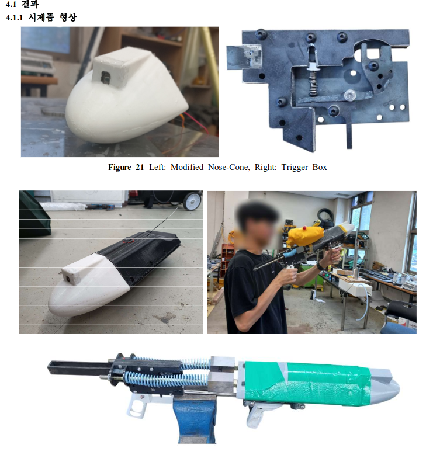

VLA 기반 자연어 Pick & Place
"사과 바구니에 담아줘" 같은 자연어 지시를 LLM이 해석하고, 협동로봇이 물체를 인식해 장애물을 우회하여 집어 옮기는 시스템.
본인 담당 판단 계층(VLA)·안전 계층(FSM) 통합, GraspGenX↔실물 RG2 정합, GPU 메모리 대응, 구동 중 정지 후 재계획, 인지 실패 감지 게이트
Robotics Engineer · ROS2 · 협동로봇 · 자율주행
기계공학부를 졸업하고, 아두이노 라인트레이서에서 자율주행 대회 팀장, 두산 협동로봇(M0609)·AMR 프로젝트까지 센서 신호가 제어 동작으로 이어지는 시스템을 만들어 왔습니다.
gwanhuig01@gmail.comgithub.com/gwanhuiGIM
VLA 기반 자연어 Pick & Place 1분 시연
"사과 바구니에 담아줘" 같은 자연어 지시를 LLM이 해석하고, 협동로봇이 물체를 인식해 장애물을 우회하여 집어 옮기는 시스템.
본인 담당 판단 계층(VLA)·안전 계층(FSM) 통합, GraspGenX↔실물 RG2 정합, GPU 메모리 대응, 구동 중 정지 후 재계획, 인지 실패 감지 게이트
실제 주행시험장에서 달리는 자율주행 인지·판단·제어 노드를 설계해 무인모빌리티 부문에 출전, 인지 일부가 빠지는 상황에서도 측위·경로추종이 유지돼 실차 대회를 완주.
본인 담당 팀장(일정·실습 환경·인수인계 문서화) · waypoint 경로추종 · 명령 중재 판단 노드

익수자에게 스스로 다가가 구명튜브를 전달하는 휴대형 전달장치. 제작비 약 51만 원(상용 대비 약 1/10), 아이디어 최우수상·졸업작품 장려상.
본인 담당 좌우 DC 모터 차동 제어 · 아두이노 회로 구성 · 설계보고서 문서화

집도의의 손 동작·음성으로 두 협동로봇이 수술도구를 전달하는 시뮬레이션. 작업 단계·트레이 재고·손추적 영상·로그를 한 화면에서 보는 웹 대시보드.
본인 담당 웹 대시보드 UI·상호작용

천장 웹캠이 쓰러짐·안전모 미착용을 감지하면 출동 가능한 AMR을 보내는 관제 시스템. 1초에 5번 뒤집히던 응급 신호를 해제 방향 지연으로 안정화.
본인 담당 관제 FSM(우선순위 선점)·쓰러짐 판정 규칙·메시지 전달 정책 설계와 디버깅

비전 센서 없이 원두 계량부터 나선형 드립까지 5단계 공정 자동화. 힘·접점 신호로 "잡았는지 모르는" 순간을 따로 분리해 안전하게 정지.
본인 담당 그리퍼 예외 상황 처리 및 정상 공정 복귀 알고리즘(팀 README 역할표 기준)
"성공처럼 보이는" 문제를 원인 후보로 나눠 재현합니다. (VLA 인지 게이트, AMR 신호 흔들림, 커피 파지 판정)
제어 권한을 한 곳으로 모으고, 명령이 없거나 낡으면 멈추게 설계합니다. (VLA 계층 통합, ERP42 판단 노드 prototype)
실측 제약과 실패를 다음 실험·인수인계의 근거로 남깁니다. (VLA 실측 제약 문서, ERP42 실차 테스트·인수인계)
| 학력 | 충남대학교 기계공학부 학사 졸업 (2020.02~2026.08) · 서천고등학교 졸업 (2017~2020.02) |
| 교육 | 두산로보틱스 ROKEY 부트캠프 8기 — 지능형 로보틱스 엔지니어 (26.02~26.08) |
| 수상 | 교내 산학연 캡스톤디자인 아이디어 최우수상 (24.11) · 교내 졸업작품 경진대회 장려상 (25.09) |
| 자격·어학 | SOLIDWORKS CSWP (Design Professional) · 1종 보통 운전면허 · OPIc IH |
| 스킬 | Ubuntu · ROS/ROS2 · Python · C++ · SolidWorks · OpenCV · Arduino |